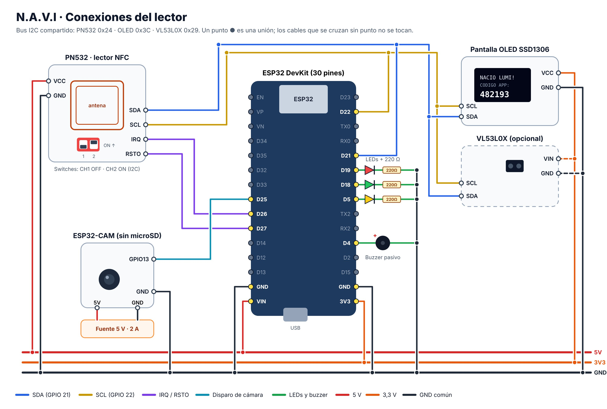
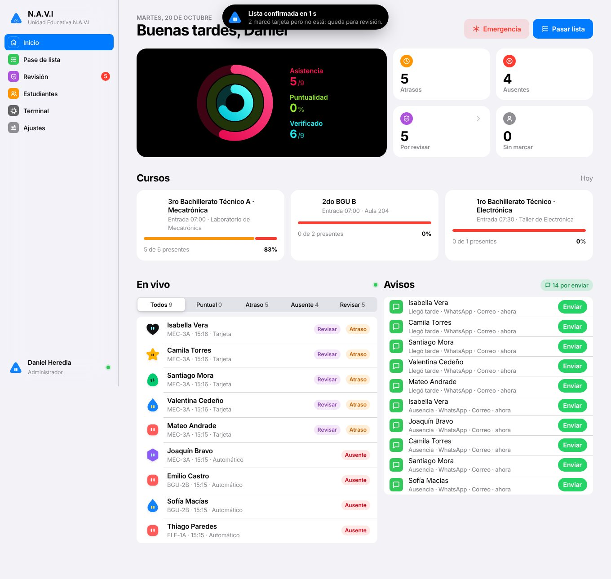
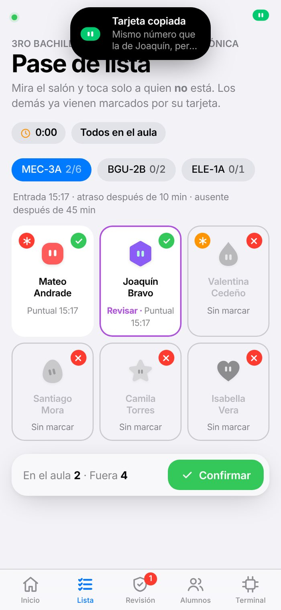
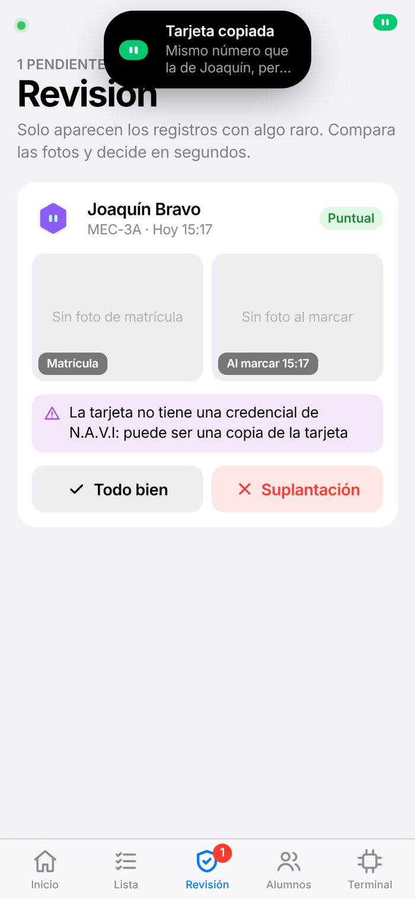
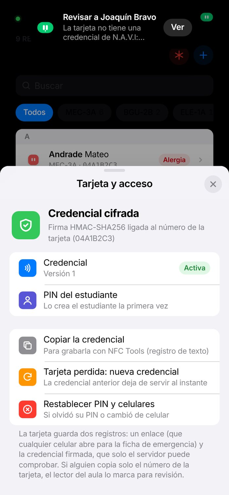
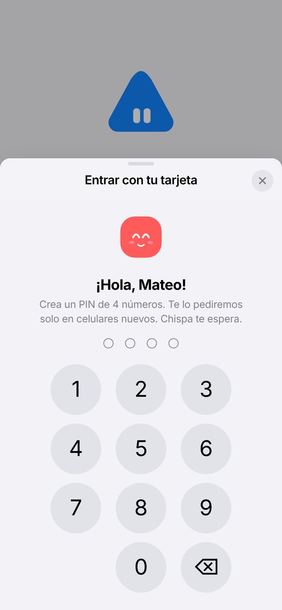
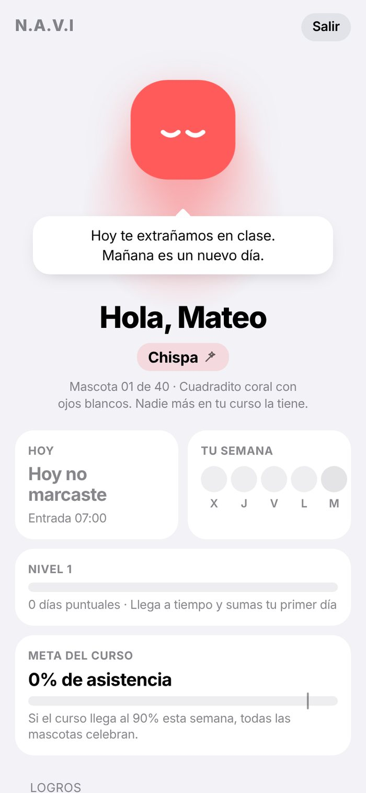
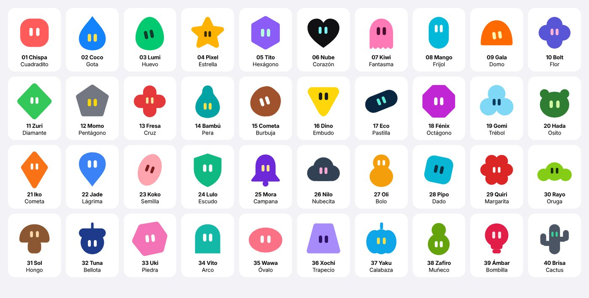
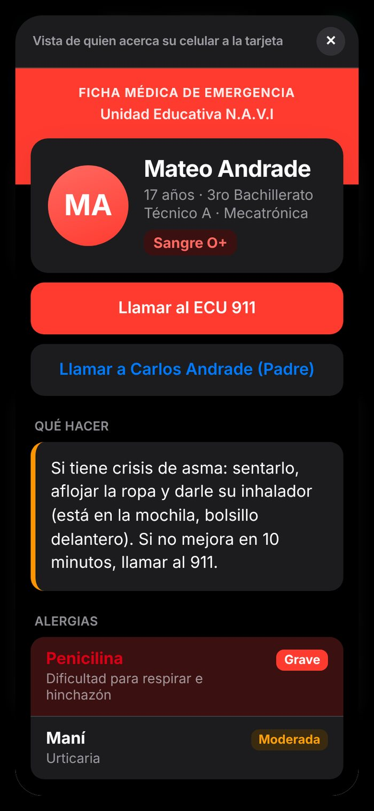
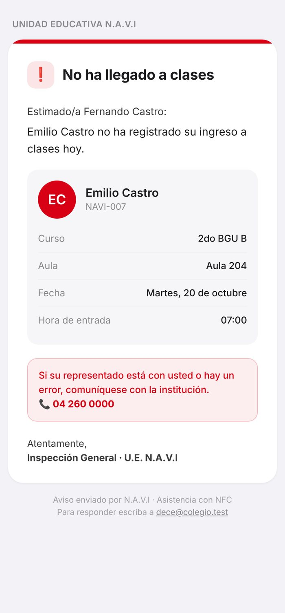

| Integrantes | Daniel Heredia [Nombre del segundo integrante, si lo hay] |
| Docente responsable | [Nombre del docente responsable] |
| Especialidad | Bachillerato Técnico en Mecatrónica |
| Ciudad y fecha | Guayaquil, Ecuador · octubre de 2026 |
En la mayoría de colegios del Ecuador la asistencia todavía se toma leyendo una lista en voz alta al inicio de cada hora de clase. Es un proceso lento, que depende de la memoria y la atención del docente, y que no deja evidencia confiable cuando un estudiante responde "presente" por un compañero. Además, cuando un estudiante no llega, la familia suele enterarse tarde, a veces días después, aunque el Reglamento General a la Ley Orgánica de Educación Intercultural (LOEI) pide notificar las inasistencias de forma inmediata.
N.A.V.I (Near Action Vital Interface) es un sistema de bajo costo que automatiza ese proceso. Cada estudiante acerca su tarjeta NFC a un lector construido con un ESP32 y un módulo PN532, programado en C++ con el entorno Arduino IDE. En menos de un segundo el lector identifica la tarjeta, muestra el resultado en una pantalla OLED con luces y sonido, y lo envía a un servidor que corre en una computadora del colegio. El servidor decide si el estudiante llegó a tiempo o con atraso, marca como ausentes a quienes no llegaron y avisa a los representantes por correo, WhatsApp o Telegram.
El proyecto no se limita a contar asistencias. Incluye una revisión contra la suplantación (un estudiante que pasa la tarjeta de otro), una cámara que solo guarda evidencia cuando hay una duda, una credencial firmada criptográficamente dentro de cada tarjeta, una ficha médica de emergencia que cualquier persona puede abrir acercando su celular a la tarjeta del estudiante, y un entorno amigable para los estudiantes: cada uno tiene una mascota digital única que crece cuando llega a tiempo.
El sistema funciona en la red local del colegio, sin depender de internet, y guarda los registros en el propio lector si se cae el WiFi. Se acompaña de una aplicación web instalable y de una aplicación para Android.
Diseñar y construir un sistema de registro de asistencia escolar basado en tarjetas NFC y en la plataforma Arduino (ESP32), que reduzca el tiempo del pase de lista, haga detectable la suplantación, notifique de inmediato a los representantes y ofrezca información médica de emergencia, protegiendo los datos personales de los estudiantes.
Según datos del Ministerio de Educación publicados por Lupa Media, en el año lectivo 2023-2024 abandonaron sus estudios 72.644 estudiantes, una tasa del 1,75 %. El plan nacional "Cuidemos de ti" del Ministerio de Educación (2024) reporta para la provincia del Guayas una tasa de abandono del 1,71 % (18.735 estudiantes) en 2022-2023. Antes de que un estudiante abandone suele haber un patrón de faltas y atrasos; detectarlo a tiempo y avisar a la familia es una de las intervenciones más estudiadas.
La evidencia internacional muestra que avisar a los padres funciona. En un ensayo aleatorizado en 22 escuelas de Virginia Occidental, las alertas automáticas a los padres aumentaron la asistencia a clases en un 12 % y redujeron las materias reprobadas en un 28 % (Bergman y Chan, 2021). En Filadelfia, el envío de información a las familias redujo el ausentismo crónico en un 10 % o más en sus versiones más eficaces (Rogers y Feller, 2018). En Chile, los mensajes frecuentes a los padres aumentaron en 4,5 puntos porcentuales la proporción de estudiantes que cumplía el requisito de asistencia para ser promovidos (Berlinski et al., 2021).
El pase de lista manual también consume tiempo de clase. No existe una medición oficial para el Ecuador; estudios de prototipos RFID en otros países estiman entre 3 y 10 minutos por clase (Turpo Benique, 2025; Ege y Özdemir, 2026). Con un supuesto conservador de 4 minutos en 6 horas diarias durante 200 días, un curso pierde unas 80 horas al año.
Plataformas como Educar Ecuador o Idukay permiten registrar la asistencia y comunicarse con las familias, pero el dato lo ingresa el docente a mano. Los lectores biométricos capturan el dato automáticamente, pero tratan datos biométricos de menores. N.A.V.I se ubica en medio: captura el dato en el aula de forma automática, con un medio no biométrico, y puede complementar a esas plataformas en lugar de reemplazarlas.
El proyecto se desarrolló en etapas iterativas. Cada etapa terminó con pruebas y con una lista de errores corregidos, que se documenta en el archivo docs/ERRORES_CORREGIDOS.md del repositorio.
| Etapa | Qué se hizo | Resultado |
|---|---|---|
| 1. Investigación | Revisión de normativa (LOEI, LOPDP), de estudios sobre avisos a familias y de la seguridad de las tarjetas NFC (MIFARE, NTAG). | Se descartó la biometría y se eligieron tarjetas NTAG213/215. |
| 2. Diseño del sistema | Arquitectura en tres partes: lector de aula, servidor local y aplicación. Definición de estados (puntual, atraso, ausente) y de las señales del lector. | Diagrama de bloques (figura 1) y tabla de conexiones. |
| 3. Montaje electrónico | Conexión del ESP32 con el PN532 y la OLED por el bus I2C, LEDs con resistencias de 220 Ω, buzzer pasivo, línea de disparo hacia el ESP32-CAM. | Prototipo en protoboard [agregar fotos en el anexo A]. |
| 4. Programación del lector | Firmware en C++ con Arduino IDE: lectura NFC sin bloqueo, envío por HTTP, cola sin conexión en LittleFS, reloj sincronizado con el servidor, lectura de la credencial NDEF. | Registro en menos de 1 s por estudiante. |
| 5. Servidor y aplicación | Node.js con base de datos SQLite, API REST, WebSocket en tiempo real, aplicación web instalable (PWA) y aplicación Android con NFC nativo. | Panel en vivo, pase de lista, revisión, avisos y portal del estudiante. |
| 6. Seguridad | Detección de ráfagas y patrones, cámara de evidencia, credencial HMAC-SHA256 ligada al UID, PIN y vinculación del celular del estudiante. | Copias del número de tarjeta marcadas para revisión. |
| 7. Pruebas y mejora | Pruebas automáticas de la interfaz en celular y computadora, pruebas del servidor, prueba del decodificador NDEF del firmware y verificación de la firma del APK. | Ver capítulo 7. |
| Componente | Función | Costo aprox. (USD) |
|---|---|---|
| ESP32 DevKit V1 | Microcontrolador con WiFi; programa del lector en C++ | 8 – 12 |
| Módulo NFC PN532 V3 (modo I2C) | Lee tarjetas ISO 14443A (NTAG y MIFARE) | 8 – 12 |
| Pantalla OLED SSD1306 0,96" | Muestra saludo, estado y hora | 5 – 8 |
| LEDs verde, amarillo y rojo + 3 resistencias 220 Ω | Señal visual del resultado | 0,40 |
| Buzzer pasivo | Tonos distintos para cada resultado | 0,50 |
| Tarjetas NTAG213/215 | Identificación del estudiante, ficha y credencial | 0,40 – 1 c/u |
| Protoboard, cables y fuente 5 V | Montaje y alimentación | 8 – 12 |
| ESP32-CAM con base MB (opcional) | Foto de evidencia en cada toque | 10 – 15 |
| Sensor VL53L0X (opcional) | Detecta si una misma persona pasa dos tarjetas | 5 – 8 |
| Total por aula sin cámara / con cámara | 30 – 45 / 45 – 65 | |
Precios de referencia de tiendas de electrónica y tiendas en línea, que varían. [Reemplazar por los precios reales pagados y adjuntar la cotización en anexos.]
| Componente | Pin del componente | Pin del ESP32 |
|---|---|---|
| PN532 (switches: 1 en ON, 2 en OFF) | VCC · GND · SDA · SCL · IRQ · RSTO | 5V · GND · GPIO 21 · GPIO 22 · GPIO 26 · GPIO 27 |
| OLED SSD1306 | VCC · GND · SDA · SCL | 3.3V · GND · GPIO 21 · GPIO 22 |
| LED verde / amarillo / rojo | Ánodo (con 220 Ω a GND) | GPIO 18 / GPIO 5 / GPIO 19 |
| Buzzer pasivo | + / – | GPIO 4 / GND |
| Disparo de cámara | GPIO 13 del ESP32-CAM | GPIO 25 (y GND común) |
| VL53L0X (opcional) | VIN · GND · SDA · SCL | 3.3V · GND · GPIO 21 · GPIO 22 |

| Parte | Tecnología | Detalle |
|---|---|---|
| Firmware del lector y la cámara | C++ en Arduino IDE 2, núcleo ESP32 de Espressif 3.x | Librerías Adafruit PN532, Adafruit SSD1306, Adafruit GFX, ArduinoJson 7, LittleFS, Adafruit VL53L0X |
| Servidor | Node.js 22 o más nuevo, Express 5, SQLite integrado en Node (node:sqlite), ws, nodemailer | 12 módulos, base de datos SQLite en modo WAL, sin dependencias que se compilen |
| Aplicación web | HTML, CSS y JavaScript sin frameworks | Instalable (PWA), modo claro y oscuro, tiempo real por WebSocket |
| Aplicación Android | Java, WebView y API NFC de Android (minSdk 24) | Lee y graba tarjetas NTAG con el NFC del celular |
| Tarjeta | Seguridad | Uso en N.A.V.I |
|---|---|---|
| MIFARE Classic | Cifrado Crypto1 roto desde 2008 (Garcia et al., 2008); se copia en segundos | Solo para asistencia; no se recomienda |
| NTAG213/215 | UID fijo de 7 bytes, contraseña de 32 bits y firma de originalidad de NXP (NXP Semiconductors, 2015) | Opción actual: barata y legible por cualquier celular |
| NTAG 424 DNA | AES-128 y un código distinto en cada toque (SUN) | Mejora futura propuesta |
Cada tarjeta guarda una credencial con el formato NAVI1.código.versión.firma. La firma es un HMAC-SHA256 (Krawczyk et al., 1997) calculado por el servidor sobre el código del estudiante, el UID de la tarjeta y la versión, con una clave que nunca sale del servidor. Una credencial no se puede fabricar sin esa clave, no sirve en otra tarjeta y deja de funcionar si el docente emite una nueva por pérdida.
NAVI1..GRABAR con el mensaje NDEF ya armado. El lector lo escribe en las páginas 4 a 39, vuelve a leer la credencial, la compara con la esperada y avisa el resultado al servidor. Así ningún celular con NFC es necesario.String readCredential(uint8_t uidLen) {
if (uidLen != 7) return "";
uint8_t mem[144];
uint8_t page[4];
uint16_t n = 0;
for (uint8_t p = 4; p < 40 && n + 4 <= sizeof(mem); p++) {
if (!nfc.ntag2xx_ReadPage(p, page)) break;
memcpy(mem + n, page, 4);
n += 4;
if (ndefComplete(mem, n)) break;
}
return parseCredential(mem, n);
}
La función lee como máximo 144 bytes (la memoria de usuario de una NTAG213) y se detiene en cuanto el mensaje NDEF está completo, para no demorar el registro. parseCredential recorre los bloques TLV y los registros NDEF (encabezado, longitud del tipo, longitud de los datos) y devuelve el texto de la credencial.
String writeNdef(const char *hex) {
uint8_t data[144];
int n = hexToBytes(hex, data, sizeof(data));
if (n <= 0) return "DATOS";
while (n % 4) data[n++] = 0x00;
for (int i = 0; i < n; i += 4) {
uint8_t page = 4 + i / 4;
if (page > 39) return "MUY GRANDE";
if (!nfc.ntag2xx_WritePage(page, data + i)) return "SE MOVIO";
}
return "";
}
Para grabar, el lector convierte el mensaje que envía el servidor de hexadecimal a bytes, lo completa a múltiplos de 4 y escribe una página de 4 bytes a la vez. Si la tarjeta se retira a mitad, la escritura falla y se avisa en la pantalla; después relee la credencial con readCredential y solo confirma si coincide.
void sendScan(const String &uid, const String &cred, bool ntag) {
if (WiFi.status() != WL_CONNECTED) {
queueOffline(uid, cred, ntag);
feedback("OFFLINE", false, "GUARDADO", "SIN RED");
return;
}
JsonDocument doc;
doc["uid"] = uid;
doc["terminal_id"] = TERMINAL_ID;
if (cred.length()) doc["cred"] = cred;
if (ntag) doc["ntag"] = true;
...
}
function verify(text, uid) {
const p = parse(text);
if (!p) return { ok: false, reason: 'FORMATO' };
const student = db.q('SELECT * FROM students WHERE student_code = ? AND active = 1').get(p.code);
if (!student) return { ok: false, reason: 'DESCONOCIDO' };
if (cleanUid(uid) && cleanUid(uid) !== student.nfc_uid) return { ok: false, reason: 'OTRA_TARJETA', student };
if (!equal(signature(p.code, student.nfc_uid, p.ver), p.sig)) return { ok: false, reason: 'FIRMA', student };
if (p.ver !== student.card_ver) return { ok: false, reason: 'REVOCADA', student };
return { ok: true, student };
}
La aplicación de docentes muestra el día en vivo, el pase de lista por excepción, la revisión con fotos, los estudiantes con su ficha médica, el simulador del lector y los ajustes de avisos. La pantalla de inicio separa la cuenta del docente (correo y contraseña) de la del estudiante (solo su tarjeta). El estudiante entra de dos formas: con el código de un solo uso que muestra el lector del aula, que sirve en cualquier celular aunque no tenga NFC, o acercando su tarjeta a un celular con NFC. La primera vez pide crear un PIN y vincula ese celular; desde ahí la cuenta queda guardada, el lector ya no muestra códigos y la sesión se renueva sola durante el año lectivo. Antes de su primer toque en el lector, la mascota aparece como un huevo dormido. Si la mascota se va por cinco faltas seguidas, el estudiante ve una despedida y elige uno de tres huevos nuevos entre las mascotas libres de su curso; las anteriores quedan en su historial. El docente ve en Inicio una lista de alerta temprana con los estudiantes que llevan tres o más faltas seguidas sin justificar. Después muestra su mascota, su estado de hoy, su semana, su nivel, sus logros y la meta del curso. En Android la lectura y grabación de tarjetas usa la API NFC nativa; en el navegador Chrome para Android usa Web NFC.
| Prueba | Método | Resultado |
|---|---|---|
| Interfaz completa | 9 recorridos automáticos con un navegador controlado por código (Playwright), en celular y computadora, modo claro y oscuro | Sin errores de página en todos los recorridos |
| Tiempo de respuesta del servidor | 225 registros con credencial firmada, medidos de extremo a extremo por HTTP en la misma máquina | Promedio 2,7 ms; percentil 95: 5,2 ms; máximo 19,7 ms |
| Credencial falsificada | Credencial con firma inventada para un estudiante real | Rechazada: "La firma de la credencial no es válida" |
| Credencial copiada a otra tarjeta | Credencial válida presentada con el UID de otro estudiante | Rechazada: "La credencial fue copiada de otra tarjeta" |
| Copia del número de tarjeta | Registro de una tarjeta NTAG con el UID correcto pero sin credencial | Registro marcado para revisión con el motivo |
| PIN del estudiante | PIN incorrecto en un celular nuevo | Rechazado; bloqueo de 10 min tras 5 intentos |
| Decodificador NDEF del firmware | Compilación del código C++ del lector en la PC con un mensaje NDEF real (enlace + texto, 92 bytes) | Credencial extraída correctamente, también con bloques TLV adicionales |
| Correo | Servidor de correo de prueba local; contraseña incorrecta y correcta | Mensajes de error claros; correo recibido con copia al DECE |
| APK de Android | Verificación independiente de la firma (apksigtool) y análisis del archivo (androguard) | Firma APK v2 válida; paquete ec.navi.app, 936 KB |
| Pase de lista | Confirmación de un curso de 6 estudiantes por la API | 3 ms en el servidor |
| Grabación con el lector | Recorrido completo por HTTP como lo hace el firmware: activar, tocar, grabar y confirmar; también tarjeta nueva y tarjeta de otro estudiante durante la espera | Mensaje NDEF de 87 bytes; la tarjeta de otro estudiante marca asistencia normal; la tarjeta nueva queda asignada con nueva versión |
| Código de un solo uso | Código del lector usado dos veces, código inventado, código usado después de reiniciar el servidor y toques posteriores a crear la cuenta | Primer uso aceptado; segundo uso e inventado rechazados; el código sobrevive al reinicio; después de crear la cuenta el lector no muestra más códigos |
| Vida de la mascota | Faltas seguidas insertadas en la base de datos para varios estudiantes, con justificación y sin ella | 3 faltas: 2 corazones; regreso: "ME SALVASTE!"; 5 faltas: se va y aparece en la alerta temprana; al justificar una falta vuelve; al elegir un huevo nuevo empieza en el nivel 1; sin cuenta, el lector entrega un huevo nuevo automáticamente; el aviso al representante se envía una sola vez |
| Escritor NDEF del firmware | Compilación en la PC de writeNdef con una memoria NTAG simulada y relectura con readCredential | La credencial releída coincide con la grabada |
Completar con las mediciones del prototipo armado. Son el dato más valioso del reporte porque son propias y verificables.
| Medición | Cómo medir | Resultado |
|---|---|---|
| Tiempo del pase de lista manual | Cronómetro en 5 clases reales | [ ] s |
| Tiempo con N.A.V.I (fila + confirmación del docente) | Cronómetro en las mismas clases | [ ] s |
| Tiempo por estudiante en el lector | Del toque al LED, promedio de 30 toques | [ ] s |
| Lecturas fallidas | Toques sin lectura / toques totales | [ ] % |
| Consumo del lector | Multímetro USB durante 1 hora | [ ] mA · [ ] Wh/día |
| Tiempo hasta el aviso al representante | Desde el límite de ausencia hasta que llega el correo | [ ] s |









| LED y sonido | Pantalla | Significado |
|---|---|---|
| Verde, tono agudo | HOLA MATEO · A TIEMPO | Registro puntual |
| Amarillo, tono medio | HOLA MATEO · ATRASO | Registro con atraso |
| Amarillo | REGISTRO EN REVISION | El docente debe revisarlo |
| Amarillo | GUARDADO · SIN RED | Sin WiFi; se enviará después |
| Rojo, tono grave | TARJETA NO REGISTRADA | Tarjeta desconocida |
| Verde | Mascota · NACIO LUMI! · CODIGO APP | Primer registro: nace la mascota y aparece el código para la app |
| Amarillo | YA MARCO 07:02 | Ya había marcado hoy |
| Verde o amarillo | Mascota · ME SALVASTE! | Volvió después de dos o más faltas seguidas |
| Verde o amarillo | ELIGE MASCOTA | Su mascota se fue; debe elegir otra en la app |
| Verde, dos tonos | GRABADA · TARJETA LISTA | Tarjeta grabada y comprobada por el lector |
| Rojo | NO GRABO · SE MOVIO | La tarjeta se retiró antes de terminar |
El código completo está en la carpeta del proyecto: firmware/navi_esp32_pn532 (lector), firmware/navi_esp32_cam (cámara), backend (servidor y aplicación web) y android (aplicación Android). [Agregar capturas del código abierto en Arduino IDE y del monitor serie.]
Android Developers. (s. f.). Network security configuration. Google. https://developer.android.com/privacy-and-security/security-config
Baldé, C. P., Kuehr, R., Yamamoto, T., McDonald, R., D'Angelo, E., Althaf, S., Bel, G., Deubzer, O., Fernandez-Cubillo, E., Forti, V., Gray, V., Herat, S., Honda, S., Iattoni, G., Khetriwal, D. S., Luda di Cortemiglia, V., Lobuntsova, Y., Nnorom, I., Pralat, N., y Wagner, M. (2024). The global e-waste monitor 2024. International Telecommunication Union y United Nations Institute for Training and Research. https://ewastemonitor.info/
Bergman, P., y Chan, E. W. (2021). Leveraging parents through low-cost technology: The impact of high-frequency information on student achievement. Journal of Human Resources, 56(1), 125–158. https://doi.org/10.3368/jhr.56.1.1118-9837R1
Berlinski, S., Busso, M., Dinkelman, T., y Martínez A., C. (2021). Reducing parent-school information gaps and improving education outcomes: Evidence from high frequency text messaging (NBER Working Paper n.º 28581). National Bureau of Economic Research. https://doi.org/10.3386/w28581
Chen, Z.-H., Liao, C. C. Y., Chien, T.-C., y Chan, T.-W. (2011). Animal companions: Fostering children's effort-making by nurturing virtual pets. British Journal of Educational Technology, 42(1), 147–166. https://doi.org/10.1111/j.1467-8535.2009.01003.x
Ege, F., y Özdemir, M. (2026). RFID-based non-biometric classroom attendance system: Proxy attendance detection via weight sensor integration [Preprint]. arXiv. https://arxiv.org/abs/2604.22697
Espressif Systems. (2025). ESP32 series datasheet (versión 5.3). https://www.espressif.com/sites/default/files/documentation/esp32_datasheet_en.pdf
Garcia, F. D., de Koning Gans, G., Muijrers, R., van Rossum, P., Verdult, R., Wichers Schreur, R., y Jacobs, B. (2008). Dismantling MIFARE Classic. En S. Jajodia y J. Lopez (Eds.), Computer Security – ESORICS 2008 (pp. 97–114). Springer. https://doi.org/10.1007/978-3-540-88313-5_7
Google Chrome Developers. (2021). Interact with NFC devices on Chrome for Android. https://developer.chrome.com/docs/capabilities/nfc
Krawczyk, H., Bellare, M., y Canetti, R. (1997). HMAC: Keyed-hashing for message authentication (RFC 2104). Internet Engineering Task Force. https://doi.org/10.17487/RFC2104
Ley Orgánica de Protección de Datos Personales. (2021, 26 de mayo). Registro Oficial Suplemento 459.
Lupa Media. (2024). Cifras del abandono escolar en Ecuador. https://lupa.com.ec/explicativos/cifras-abandono-escolar-ecuador/
Manolev, J., Sullivan, A., y Slee, R. (2019). The datafication of discipline: ClassDojo, surveillance and a performative classroom culture. Learning, Media and Technology, 44(1), 36–51. https://doi.org/10.1080/17439884.2018.1558237
Ministerio de Educación del Ecuador. (2017). Reglamento General a la Ley Orgánica de Educación Intercultural. https://educacion.gob.ec/wp-content/uploads/downloads/2017/05/Reglamento-General-Ley-Organica-Educacion-Intercultural.pdf
Ministerio de Educación del Ecuador. (2024). Plan nacional "Cuidemos de ti". https://educacion.gob.ec/wp-content/uploads/downloads/2024/10/Plan-nacional-cuidemos-de-ti.pdf
NXP Semiconductors. (2015). NTAG213/215/216: NFC Forum Type 2 Tag compliant IC with 144/504/888 bytes user memory [Hoja de datos]. https://www.nxp.com/docs/en/data-sheet/NTAG213_215_216.pdf
NXP Semiconductors. (2019). NTAG 424 DNA – NT4H2421Gx [Hoja de datos]. https://www.nxp.com/docs/en/data-sheet/NT4H2421Gx.pdf
Presidencia de la República del Ecuador. (2023). Reglamento General a la Ley Orgánica de Protección de Datos Personales. https://www.cosede.gob.ec/wp-content/uploads/2023/12/REGLAMENTO-GENERAL-A-LA-LEY-ORG%C3%81NICA-DE-PROTECCION-DE-DATOS-PERSONALES_compressed-1.pdf
Rogers, T., y Feller, A. (2018). Reducing student absences at scale by targeting parents' misbeliefs. Nature Human Behaviour, 2(5), 335–342. https://doi.org/10.1038/s41562-018-0328-1
Sailer, M., y Homner, L. (2020). The gamification of learning: A meta-analysis. Educational Psychology Review, 32(1), 77–112. https://doi.org/10.1007/s10648-019-09498-w
Turpo Benique, C. O. (2025). Sistema de control de asistencia escolar basado en tecnología RFID con Raspberry Pi y Arduino: EDURFID [Preprint]. arXiv. https://arxiv.org/abs/2507.14191
Adafruit Industries. Adafruit PN532, Adafruit SSD1306, Adafruit GFX y Adafruit VL53L0X [Librerías para Arduino]. https://github.com/adafruit
Blanchon, B. ArduinoJson (versión 7) [Librería para Arduino]. https://arduinojson.org
Espressif Systems. Arduino core for the ESP32 (versión 3.x). https://github.com/espressif/arduino-esp32
Kazuhiko Arase. QR Code Generator (versión 1.4.4, licencia MIT). https://github.com/kazuhikoarase/qrcode-generator
OpenJS Foundation y colaboradores. Node.js (incluido node:sqlite), Express, ws y Nodemailer. https://nodejs.org